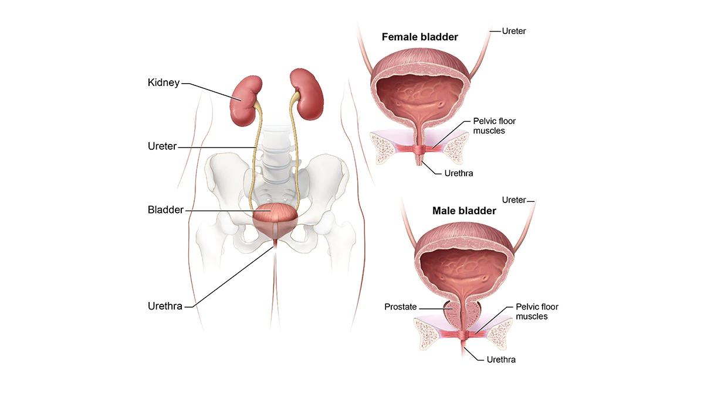

Interstitial Cystitis

CAUSES
Causes of interstitial cystitis include:
- Autoimmune disease.
- Allergies.
- Defects in the lining of the bladder.
- Vascular (blood vessel) disease.
- Mast cell (cells that cause allergic symptoms) abnormalities.
- Presence of abnormal substances in the urine.
- Unidentified infections.
SYMPTOMS
Symptoms of interstitial cystitis include:
- Suprapubic or pelvic pain.
- Pressure or discomfort when the bladder is filling.
- Having to urinate frequently.
- Urinating small amounts.
DIAGNOSIS
Your doctor may run different tests including:
- Urine sample and urinalysis: The patient provides a urine sample, and the doctor examines it with a microscope to learn if there are any organisms, germs, pus, or white blood cells, which could mean that there is an infection. The doctor can treat the infection with antibiotics. If the urine is sterile for weeks or months and the symptoms continue, doctors may make a diagnosis of IC.
- Biopsy of the bladder wall and urethra: A biopsy is a sample of tissue taken from the body in order to examine it more closely. This procedure will be done under anesthesia. Tissue may be taken from the bladder wall and urethra (the tube through which urine passes out of the body) to rule out other conditions. A biopsy can help rule out bladder cancer.
- Cystoscopy: The doctor may examine the inside of the bladder with an instrument called a cystoscope. This is a long, thin scope with an eyepiece on one end. The cystoscope is gently placed up the urethra and into the bladder. The doctor can see into the bladder by looking through the eyepiece. The patient is not under anesthesia during this procedure. A cystoscopy can rule out bladder cancer. If a bladder biopsy is also planned, the cystoscopy may be performed at the same time, but this may require anesthesia.
- Cystoscopy under anesthesia with bladder distension: A cystoscopy may also be done with bladder distention (stretching). The doctor will perform a cystoscopy as described above and will distend (stretch) the bladder to its maximum capacity by filling it with water. This procedure can reveal cracks in the bladder. This procedure requires anesthesia because the stretching is painful for people with IC. After this procedure, many IC/PBS patients experience temporary relief of their symptoms.
TREATMENTS
Interstitial cystitis/painful bladder treatments can include:
- Diet
- Physiscal Activity
- Reducing stress: Stress can trigger flare-ups and symptoms in someone who has IC/PBS. Learning stress reduction methods and setting aside time for relaxation may make living with IC/PBS easier.
-
Physical therapy: The pelvic muscles hold the bladder in place and help control urination. Exercising these muscles may help reduce the symptoms of IC/PBS. Your doctor or physical therapist can help you perform this exercises correctly.
-
Bladder retraining: A person who has bladder pain can get in the habit of using the bathroom as soon as he or she feels pain or urgency, even if the bladder is not full. As a result, his or her body may get used to going to the bathroom often. Bladder retraining is a treatment to try to overcome this habit by helping you hold urine for a longer period of time. To use bladder retraining, keep a diary of how often you urinate, and how often you have the urge to urinate. Use the diary to gradually increase the length of time between bathroom breaks.
-
Oral medications
-
Bladder instillations: Another treatment is to fill the bladder with a liquid medicine. You place a small catheter or tube in the urethra and fill the bladder with medicine.
-
Bladder stretching/hydrodistension: Bladder stretching or hydrodistension is a procedure that is performed in the operating room under anesthesia. The bladder is filled with sterile water in order to distend the bladder and increase the amount of urine you can hold.
-
Nerve stimulation: Nerve stimulation is a treatment that helps regulate the bladder. These treatments are more helpful in reducing urgency and urinary frequency but sometimes can help with the bladder/suprapubic pain.
-
Surgery: Surgery to treat IC/PBS is used as a last resort. The surgery may remove parts of the bladder or even the entire bladder. If the patient has tried every other treatment option and pain is unbearable, surgery may be considered.